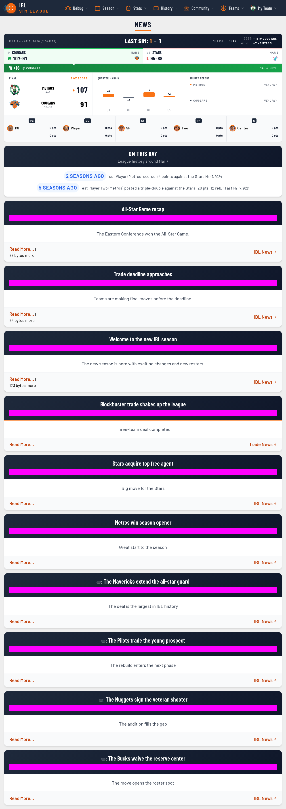
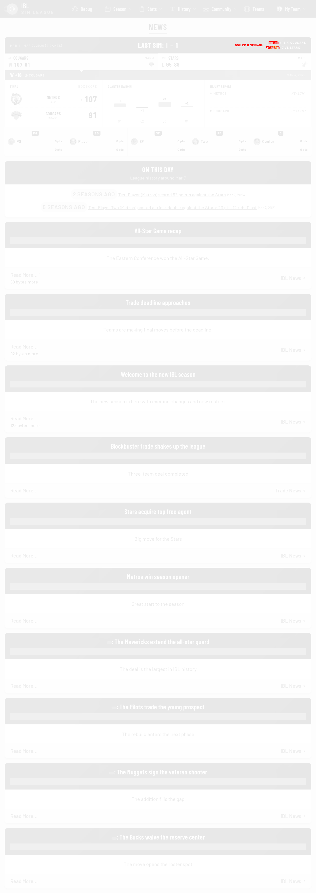

Visual review — changed renders
block-fa-admin
block-fa-admin (desktop)
Before (master) After (this PR)
After (this PR) Diff
Diff
depth-chart-entry
depth-chart-entry-mobile (mobile)
Before (master) After (this PR)
After (this PR) Diff
Diff
last-sim-recap
last-sim-recap (desktop)
Before (master)
After (this PR)
Diff